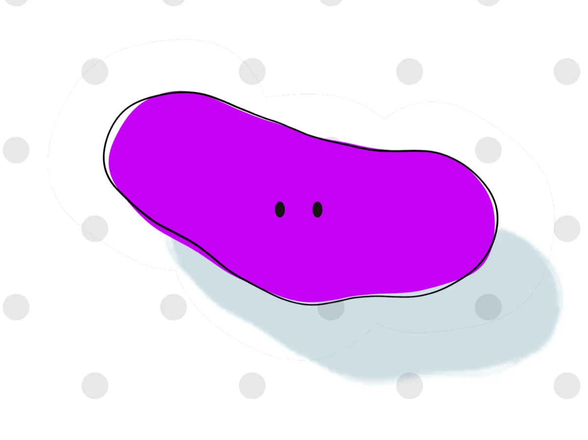
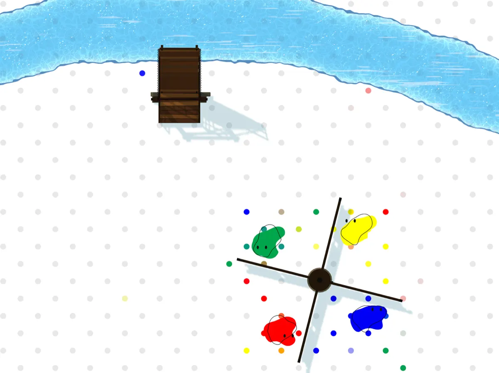
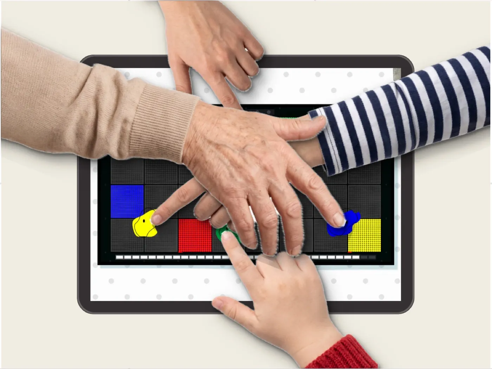
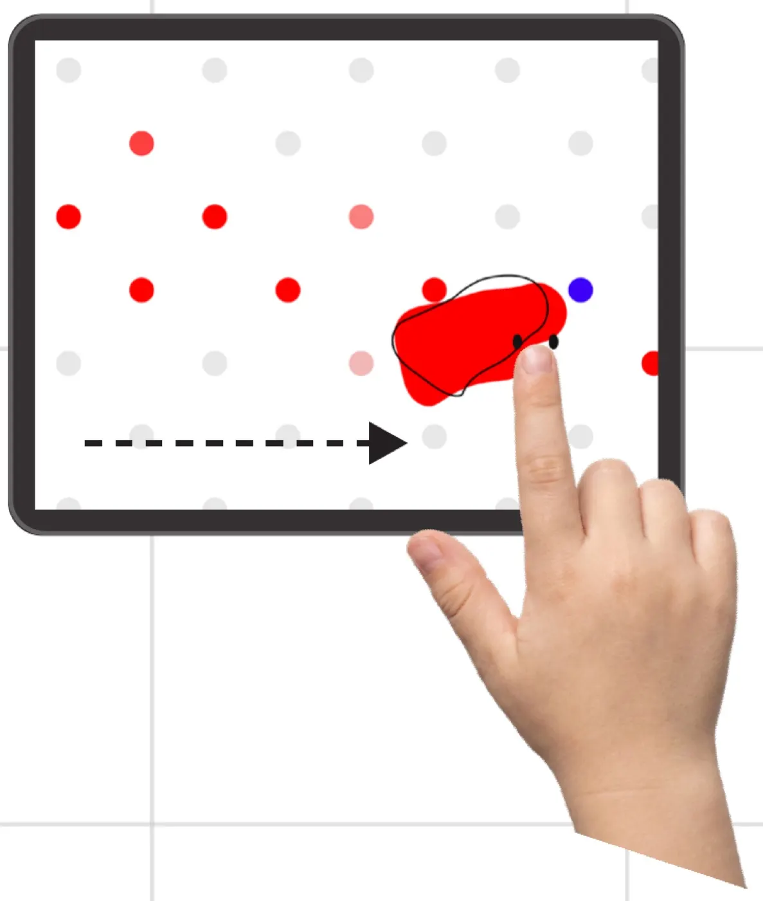
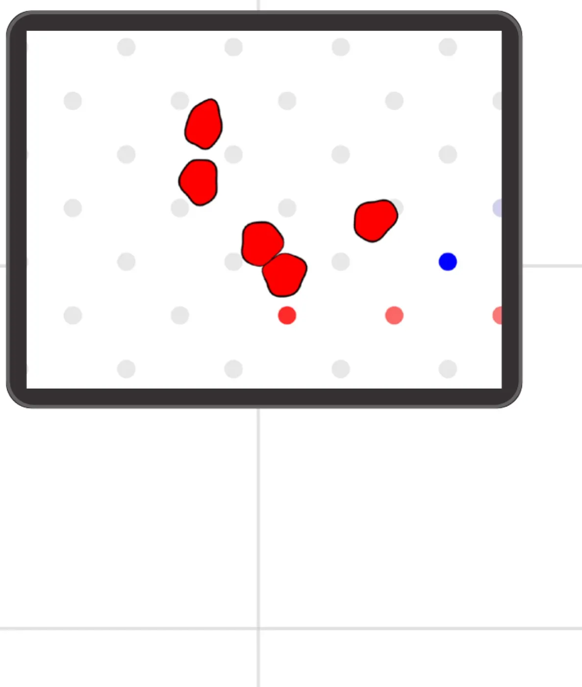
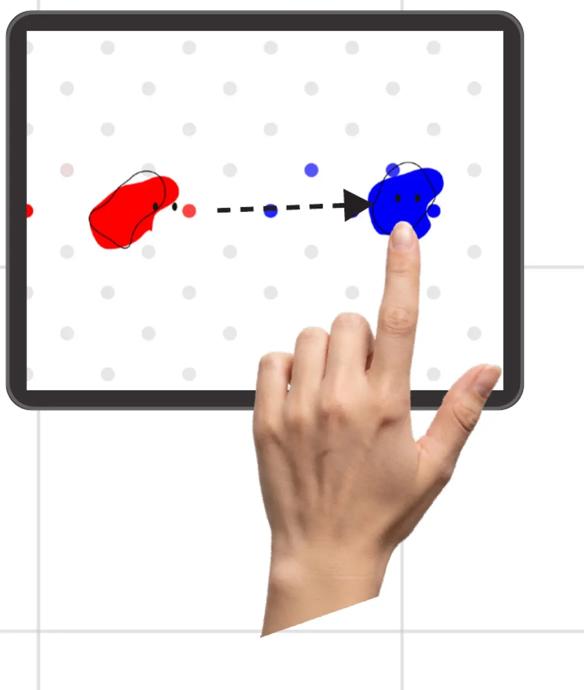
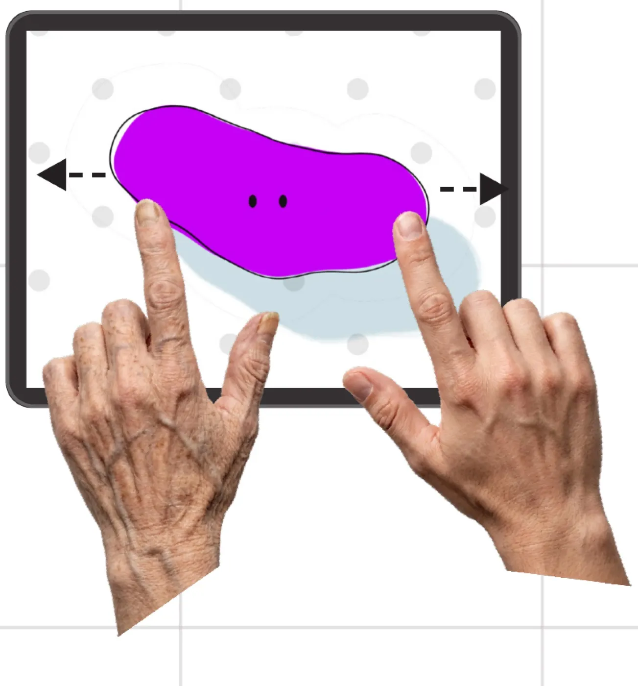
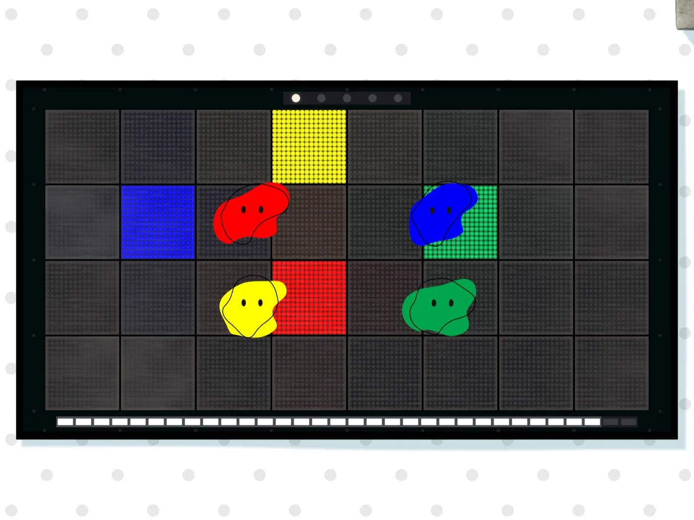

01作品概要
遊び方
画面に指を置くと、指先に生き物が生まれる。みんなで協力してギミックに挑む。
注力したポイント1 枚の iPad を囲む人どうしの、手と手の距離を近づけること。
ここが好き
プレイヤー同士の手が重なり合い、
笑いが生まれる瞬間。


02なぜ iPad か
iPad の特性を活かして、
手と手が近づく遊びをつくる。
- 使う道具
- どこにでもある iPad。平らに置けば、四方から手が届く。
- つくる遊び
- その特性を使って、複数人の物理的な距離が近くなる遊び。

iPad の特性を、遊びに使う
囲める大きさ
平らに置くと、四方から触れる。みんなで iPad の周りを動き、指の届く場所を探す。
たくさんの指
iPad は 10 本以上の指を同時に読み取れる。指 1 本にキャラ 1 体。何人で触っても遊べる。
指で画面が隠れる
触っている指が、ほかの人の見たいところを隠してしまう。これを遊びに使いたい（次に試したいこと）。
03遊びの核
指どうしが近づき、手が重なって笑う。
みんなで iPad の
周りを動く
誰かの指が邪魔で
届かない
手が重なって
笑いが生まれる
デジタルだからこそ、ツイスターに新しい遊びが生まれる。
なぞる
指についてくる。

離す
粒に散る。ほかの人も拾える。

投げる
ほかの指で受け止める。

混ざる
最大 4 体まで、1 体に混ざる。

04ギミック
指を散らす仕掛けと、指を集める仕掛け。

LED の床：指を散らす
一人に一マスが、その人の色で光る。全員が自分の色のマスに乗れば成功。制限時間は、フェーズごとに短くなる。
- ねらい
- 光るマスをばらばらにして、手を伸ばし合い、腕が交差するようにしたい。
はね橋：指を集める
参加者全員のキャラが、巻き上げ機の取っ手を同じ向きへ押すと、回って橋が下りる。
- ねらい
- 全員の指が、取っ手のまわりの 1 か所に集まり、息を合わせる。

次の作品
ニギっとスライム研究所
握るコントローラーで、スライムをこねて戦う。